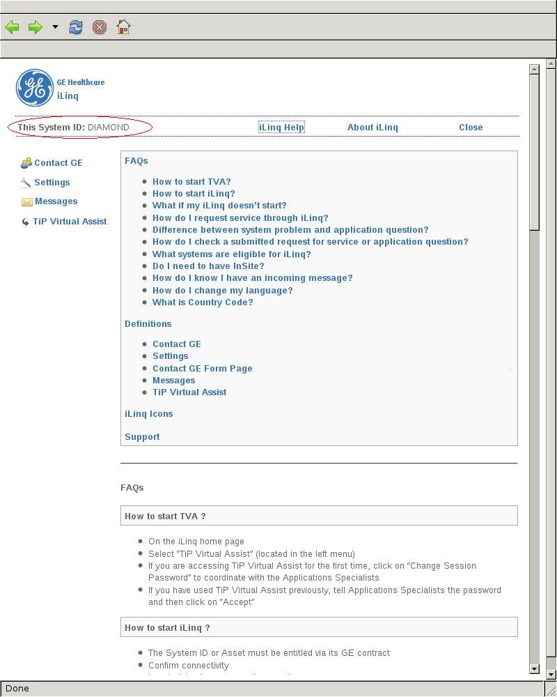
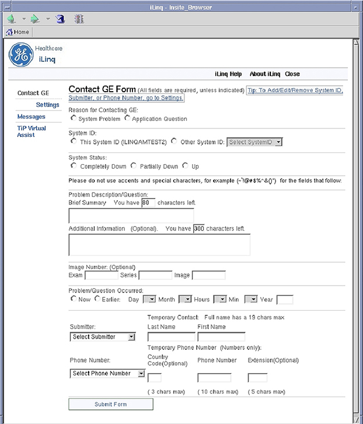
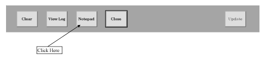
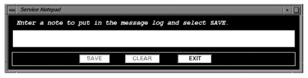

- 00000018WIA30D6D230GYZ
- id_158402625.3
- Dec 23, 2024 6:47:26 AM
InSite/IIP
This document contains the following sections:
InSite Checkout - Network
Software Installation and Prerequisites
The InSite Interactive software is automatically loaded when the Restricted Service DVD is loaded from the installation GUI.

InSite Checkout Requirements
-
The product must be on the completed compatibility list shown in Model Types.
-
The product must be physically connected to the site network (Ethernet cable plugged in).
-
Make sure that the setting in ProDiags Tab is default, otherwise the InSite checkout will fail.
-
If InSite fails to establish a connection, work with the customer to be sure port 22 is open. This specific port is required for InSite connectivity.
To comply with new security standards, the scanner network protocols now use secure shell (SSH). Industry standards recommend that port 22 is used for secure logins. You must inform the site’s IT department that the IP address assigned to the MR system for InSite connectivity must be configured to use port 22.
-
You need to know the scanner IP address and the VPN gateway address. The VPN gateway must be determined before an InSite checkout can be completed. The Broadband Specialist or the customer's IT department can provide the correct gateway address.
-
To establish connectivity to GE for a checkout, a VPN gateway must be entered on the scanner.
Note (For some older software versions)If the scanner's default gateway is not the VPN gateway, a temporary route to the VPN gateway needs to be added. At the time of a checkout, add a temporary route using the command below. This route is removed when the system is rebooted.
Temporary route add command
-
Log in to the system as root.
-
Open a C Shell window.
Note The Shell window can only be launched when the EA3 user is included in the authorized EA3 group. Users not in this EA3 group will not have access to launch the Shell window. If you are not logged on as the proper logon user, log off and then log back on as the correct EA3 user with the authorized permissions. -
Type: route add -net 150.2.0.0 (gateway)<Enter> (gateway is the site’s gateway IP address).
Route delete command
-
Log in to the system as root.
-
Open a C Shell window.
Note The Shell window can only be launched when the EA3 user is included in the authorized EA3 group. Users not in this EA3 group will not have access to launch the Shell window. If you are not logged on as the proper logon user, log off and then log back on as the correct EA3 user with the authorized permissions. -
Type: route delete -net 150.2.0.0 (gateway)<Enter> (gateway is the site gateway IP address).
-
InSite Checkout
This section describes the InSite checkout process.
Authorization Tab
The Authorization tab is a security confirmation screen. You are prompted to click DECLINE if not a GE employee, or click ACCEPT three times if you are a GE employee.
Click ACCEPT three times to initialize the main tabs.
ProDiags Tab
The ProDiags tab is for the configuration of Proactive Diagnostics. Select DEFAULT.

CUSTOM may be used to configure and modify the default ProDiags schedule.
Health Page Tab
The Health Page tab is for the configuration of the Health Page report.
-
Enable Health Page Report and enter a valid email address.
-
A valid email address is defined as a string in the format name@location.
-
The standard format for GE email addresses is:
firstname.lastname @ge.com. Be careful to enter the correct email address(es).
-
A check is made for @ only. All email addresses are saved to the /usr/g/config/healthpg.adr file in the format: user #=email address.
-
-
Select DEFAULT (or CUSTOM to configure the Health Page report).
Selecting the DEFAULT button configures the Health Page with the default schedule file.
Device Connection Tab
Some versions of software default to the Modem selection on the Device Connection Type menu, as shown below. If this is the case, change the selection to Network.

The Broadband Device Connection screen requires you to enter the IP address of the gateway on the network that can connect to the Online Center.
-
Enter the gateway address that routes to the site's VPN router. It is recommended that you enter the gateway IP address.
Do not select Use Default Gateway. By specifying a gateway IP address, a route is created back to the GE address after InSite/iLinq is complete. If Use Default Gateway is selected, the connectivity information may not be saved during a save system configuration procedure. Even if the gateway IP address is the default gateway, enter the address manually to ensure that the route is created.
NoteThe IP address can be obtained from the Broadband Specialist or from the customer's IT department.
For detailed information on the broadband connectivity process, refer to the Americas Broadband Support Central.
-
Support Central: http://supportcentral.ge.com/products/sup_products.asp?prod_id=15634%20
-
Broadband Process document: http://data.supportcentral.ge.com/upload/15634/doc_510879.pps
-
-
After all text is entered, click APPLY. This pings the IP address and, after it is confirmed, updates the InSiteINFO file.
| Notice | |
|---|---|
InSite Checkout Tab
The InSite Checkout tab lets you complete the InSite configuration process. You have three options:
-
CHECKOUT NOW
-
DISABLE INSITE
-
AUTO CHECKOUT (requires /usr/g/insite/sclink.cfg file to exist)
| Notice | |
|---|---|
The CHECKOUT NOW option configures PPP to allow a connection from the Online Center. You must call the local Online Center to complete checkout.
During the checkout process, the Online Center will ask for the model type. See the table below for model type for software configurations.
| Product Name | GSCC Product Type | GSCC Model Type |
|---|---|---|
| SIGNA Pioneer Phase2 (PX26.1) | Signa-HDv | _MGDIIP455 |
| SIGNA Voyager | Signa-HDv | _MGDIIP455 |
| SIGNA Artist(DV27.1) | Signa-HDv | _MGDIIP455 |
| DV26 | Signa-HDv | _MGDIIP455 |
| PET/MR | PETMRDV | _PETMRDV |
| SIGNA Pioneer Phase1 (PX25.0) | Signa-HDv | _MGD9IIP45 |
| DV25.1 | Signa-HDv | _MGDIIP455 |
| DV25.0 | Signa-HDv | _MGD9IIP45 |
| DV24 (24x) | Signa-HDv | _MGD8IIP45 |
| DV_VCP (23.0_V03) | Signa-HDv | _MGD6-IIP4 |
| MAVRIC (23.1) | Signa-HDv | _MGD6-IIP4 |
| Brivo MR355 | Signa-HDv | SV-IIP3 |
| Optima MR360 | Signa-HDv | SV-IIP3 |
| DVApps (22x) | SIGNA-HDv | _MGD6-IIP4 |
| Optima MR450w (21x) | SIGNA-HDv | _MGD5-IIP3 |
| Optima MR450w GEM (22.1_V01) | SIGNA-HDv | _MGD6_IIP4 |
| Discovery MR450 (20x) | SIGNA-HDv | _MGD5-IIP3 |
| Discovery MR750 (20x) | SIGNA-HDv | _MGD5-IIP3 |
| Discovery MR750w (23.0_V01) | SIGNA-HDv | _MGD6_IIP4 |
| Signa HDxt (HD23) | SIGNA-HDx | _MGD4-IIP4 |
| Signa HDxt (HD16) | SIGNA-HDx | _MGD4-IIP4 |
| Signa HDxt (15M4B) | SIGNA-HDx | _MGD4-IIP4 |
| Signa HDxt (15M4A and earlier) | SIGNA-HDx | _MGD4-IIP3 |
| Signa HDxt (16.0_V01 and 16.0_02) | SIGNA-HDxt | MGD4-IIP4 |
| Signa HD 7.0T | Lightning | MGD3-IIP3 |
| Signa Excite HD (12x) | Lightning | MGD3-IIP3 |
| Signa Excite (11x) | Lightning | MGD2-IIP3 |
| Signa Excite (10x) | Lightning | LXMGD-IIP3 |
| Signa Excite 3T | Lightning | 3TMGD-IIP3 |
| Signa (9.1) | Lightning | LX_IIP3 |
| Signa (8.3)* | Lightning | LX_IIP2 |
| Signa 3T (VH3)* | Lightning | LX_IIP2 |
| Signa 3T (VH2)* | Lightning | LX_IIP |
| Signa SP* | Lightning | LX_IIP |
| Signa MRi / CVi / CV / NV* | Lightning | LX_IIP2 |
| Signa LX or Horizon (HiSpeed / EchoSpeed / SmartSpeed)* | Lightning | LX_IIP2 |
| Signa OpenSpeed Excite (HFO5) | Lightning | HFO5-IIP3 |
| Signa OpenSpeed Excite (HFO4) | Lightning | HFO4-IIP3 |
| Signa OpenSpeed (HFO3) | Lightning | HFO-IIP3 |
| Signa OpenSpeed (HFO2) | Lightning | LX_IIP2 |
| Signa Ovation Excite (MFO5) | Lightning | MFO5-IIP3 |
| Signa Ovation Excite (MFO4) | Lightning | MFO4-IIP3 |
| Signa Ovation3 (MFO3) | Lightning | MFO3-IIP3 |
| Signa Ovation | Lightning | OVATION |
| * Does not support network connectivity; modem only. | ||
During the checkout process, the Online Center will download a sclink.cfg configuration file and run ConfigLink to configure PPP and allow only the Online Center to be able to log in to the site. A checkout must be done for each mobile system ID that has a phone connection. Each mobile system has a unique sclink.cfg file. After the checkout is complete, reboot the computer to verify that there are no system issues.
To disable InSite for checkout at a later date, select DISABLE INSITE. All previously saved information is retained. If you select this option, you MUST return to the IIP configuration tool, select APPLY, then select CHECKOUT NOW. After the checkout is complete, reboot the computer to verify that there are no system issues.
Back Office Connection Check
| Notice | |
|---|---|
Select AUTO CHECKOUT to begin the verification process.
The AUTO CHECKOUT option can only be used if a sclink.cfg file exists (that is, the site has completed a checkout using the CHECKOUT NOW button at some previous time).

The Status bar (highlighted above) indicates the status of the verification process. An AutoCheckout Cancel Box is displayed while the process is running. Let the system run until the box disappears.

When Auto Checkout is complete, the Status bar displays the message “InSite Dial out Check Completed Successfully.”
Saving State of InSite Configuration
The configuration files for class M software and InSite features are saved to DVD as part of the SaveInfo process.
-
Because the files necessary to back up a system before update or reload are dynamic, InSite Interactive can be backed up by performing SaveInfo from the installation GUI.
-
The type of files saved are the license files, setup files for modem connectivity, configuration settings for web server, customer messages files, reports, and identification of download software packages.
-
Any updated or downloaded software packages are not included in the backup. In order to restore these downloaded files, an update request must be made to the Online Center following a restore.
Removal of IIP Software
To remove the class M software applications from the system, perform a Secure System from the Install GUI under the Load Services/PictureThis/IIP tab.
InSite/IIP Overview
Introduction
This document provides the pre-installation requirements and steps for installing the InSite/IIP option. It also contains information on the InSite software hardware removal process (for USA only).
InSite features: There are two methods for connecting a system to InSite. The most common is through Internet Protocol (IP) that runs over a lower software layer called Point to Point Protocol (PPP). PPP emulates an IP connection method to connect site networks, Internet access, or another connection method to get to the Internet. Check with the installation coordinator to determine the connection type.
Security: The access is controlled by an encrypted password system called CHAP secret, part of the PPP protocol. The CHAP secret is set up at the first successful InSite connection, and is maintained in the database at the Online Center (OLC).
Installation: The InSite software is included on the Restricted Service DVD. To enable it, you must select Configure IIP from the installation GUI and select the proper modem type. After answering all of the installation questions, the Online Center must do an InSite checkout to complete the process.
At the time of system install, a unique IP address is needed for InSite. This is obtained by calling the Online Center and requesting an IP number. This address will be declared in the Support Center's database.
| Notice | |
|---|---|
Information Tab
The Information tab contains five sub-tabs.
-
The Instructions tab provides information on the IIP configuration tool. To configure InSite, select the tabs from left to right, and follow the instructions for executing each task. When all tabs are complete, exit the tool.
-
The Device Connection tab provides the selection of a network connection. If a Modem tab is visible instead of the Device Connection tab, then the IIP software version needs to be upgraded. Contact the modems checkout person to obtain the proper IIP software version.
-
The Status Message History sub-tab provides an up-to-date listing of all the status messages that have displayed in the Status message line at the bottom of the tool window. Text displayed in this window is for the current session only. All status messages are tagged with a time-only stamp. When the IIP configuration tool is run using the -debug switch, additional messages are displayed here and logged to the /usr/g/insite/logfiles/configdebug.log file.
-
The Last Update Summary sub-tab provides information on when each package was last configured.
On this page, No File means that the particular option has not been configured.
-
The Troubleshooting Tips sub-tab provides basic problems, causes, and solutions for InSite-related problems.
Service Features
InSite Interactive supports the following service features:
-
ProActive Diagnostics (ProDiags)
-
Health Page
-
Device Connection
-
InSite Checkout
ProActive Diagnostics (ProDiags)
The ProDiags feature monitors diagnostically informative parameters of a scanner on a present schedule. If a scanner has InSite remote dial-out capabilities, and is located in a pole that has the networking infrastructure in place, it can automatically dial the Automated Support Center (ASC) to report the test results which can cause a dispatch to be created.
Each scanner has a schedule when testing can be performed. You should determine the normal working hours for the scanner, and when and whether ProActive Diagnostics should be run. A default schedule is supplied and is suitable for most systems.
Both the field engineer and the Online Center engineer can command ProDiags to perform these functions:
-
Schedule tests
-
Execute tests
-
Turn tests on and off
-
Look at test results
-
Look at the log file
Checking ProDiags is Enabled on the system
-
Open a C Shell and login as super user (su, operator).
Note The Shell window can only be launched when the EA3 user is included in the authorized EA3 group. Users not in this EA3 group will not have access to launch the Shell window. If you are not logged on as the proper logon user, log off and then log back on as the correct EA3 user with the authorized permissions. -
Run the command crontab -l | grep -i prodiags.
-
The system should display a message like the following.
1,16,31,46 * * * * /export/home/insite/bin/cronWrapper /export/home/insite/ProDiags/bin/proDiagsCheck >/dev/null 2>&1
-
If the system displays a message like the one shown, ProDiags is enabled on this system. No further action is required.
-
If the system does not display a message like the one shown, ProDiags is not enabled. Continue with the remaining steps.
-
-
Open Guided Install from the Service Desktop Manager.
-
Select theService SW/Insite tab.
-
Click the Configure Insite/IIP button. The IIP Configuration window will open.
-
Click theACCEPT button three times.
-
Select theProDiags tab (second tab from the left on the top panel).
-
Click the DEFAULT button.
-
Click theEXIT button to exit from the IIP Configuration window.
-
In the Exit Confirmation window, click OK.
-
Select File | Quit to close Guided Install.
The ePM form will have a check list with the following outputs.
-
PASS - No action.
-
FAIL - Perform Insite checkout for this system, through another Service Request or as part of the PM, if possible.
-
NA - Not applicable. Only for sites where the customer does not want to connect to the GE back office (such as Government or Defends sites)
Health Page
The Health Page task is a ProDiags application that provides quick access to logs and statistics that may be useful during planned maintenance and troubleshooting. The system Health Page contains data gathered over a specified time period. The Online Center will dispatch service and retain data for analysis and trending.
The Health Page report can be acquired from the system in any of four ways:
-
Automatically
-
Remotely, via InSite
-
On site, via the Common Service Desktop
-
Email request
Selecting the CUSTOM button writes the email address file and generates the custom Health Page sub-tabs. If you have not previously changed the Health Page schedule, a list of planned maintenance (PM) dates is created starting one month from the current date.
The Health Page tab provides instructions on changing values in the Options and Dates sub-tabs.

On the Options sub-tab, you can configure Health Page contents. Double-click items in the Health Page Item list to change from YES to NO or NO to YES. The SELECT ALL button selects all of the items. The CLEAR SELECTED button sets all selected items to NO. The SET SELECTED button sets all selected items to YES.
The Other Items section contains items which are value-based. Click to select an item, and have it displayed below the Other Items list. Then edit the value in the field to the right of the item. Select ACCEPT to change the value in the list. Select APPLY to write the values in the /usr/g/w/config/healthpg.cfg file.

On the Dates sub-tab, you can configure Health Page planned maintenance dates. Health Page reports are generated several days before a PM date and emailed to the FE.
The Enter Start Date fields generate a new PM date list based on the date selected. The Update List button generates the new list and adds it to the Health Page Dates list.
Select a date in the Health Page Dates list and use MODIFY or DELETE to change the date. The selected dates are displayed in the Enter Specific Date menus for you to modify. The Enter Specific Date menus can also be used to add a single date to the list by changing the desired date, then selecting ADD.
Select APPLY to update the changed dates in the /usr/w/config/healthpg.pm file.
Device Connection
The Modem option is not available on some newer software versions.

The Device Connection modem configuration is part of the InSite Interactive Platform Configuration tool. This tool allows you to configure and set up the serial port and modem. You must set (or accept the default configuration) for six items to ensure that the configuration is applied:
-
Dial-out Prefix
-
Dialing Mode
-
Modem Type
-
Country
-
Serial Port Name
-
Serial Port Speed
InSite Checkout
InSite checkout is part of the InSite Interactive Platform Configuration tool. InSite checkout allows you to complete the InSite configuration process. You have three options for performing checkout. These options require a system shut down and reboot. These options are:
-
Checkout Now
-
Disable InSite
-
Auto Checkout (available if /usr/g/Insite/sclink.cfg file exists)
The InSite checkout process for broadband connectivity is described in detail in InSite Checkout - Network.
Customer Features
InSite Interactive supports the following customer features:
-
InSite Interactive Platform
-
InSite Interactive Home Page
-
Contact GE (One Button Touch)
-
Customer Messages
InSite Interactive features are only available if the customer purchased an InSite Interactive license that includes access to one or more of these features. Standard InSite support remains unchanged.
Older versions of InSite/IIP are only supported in English. Generation 4 InSite software adds support for Latin American Spanish and Norwegian.
Starting InSite Interactive Applications
An additional icon is on the desktop to allow easy access to the InSite Interactive web-based applications. In addition, the InSite icon displays three pixmap images.

System/Application Startup
The application startup script performs a check to determine if the InSite Interactive package contains a valid service license (supplied by the Online Center). If the check is successful, the icon is added to the desktop. In addition, during Linux startup, a script is executed to see if the licenses are valid. If the licenses are valid, the web browser starts during the Linux operating system installation as a minimized application. During application startup, the InSite desktop manager icon is enabled and the web browser is maximized only within the InSite desktop environment. Regardless of the license validation results, the web server is always enabled to allow InSite web server access and functionality.
Main InSite Interactive Application (InSite Home Page)
The InSite Home Page is the customer's main view of the InSite Interactive Service offerings. From this screen, the customer can access services that they are licensed to use. If the customer selects a button for a feature they do not have a license for, or have an expired license for, they are informed of this condition and instructed how to receive a new license.
The user interface varies depending on which software version is installed.

Contact GE Application/One-Button Touch
Using the Contact GE page, the customer can enter a problem report and submit it to GE. This feature provides an easy way to capture important information which can result in faster repairs. The customer can also use this page to ask a question of an application specialist. Status of the customer request for assistance is handled by a return message via the Customer Messages application.
The screen shown here is for generation 4 InSite software, as deployed in North America. The user interface varies depending on which software version is installed.

Customer Messages/Customer Notify
The Customer Messages page lets GE deliver a message to the customer on the product. The InSite Interactive feature notifies customers when they have a new message. The customer can access the Customer Messages area by selecting the InSite button on the desktop, then selecting Get Mail Messages from the main InSite Interactive screen.
The screen shown here is for generation 4 InSite software. The user interface varies depending on which software version is installed.

Modem Setup and Checkout
This section highlights differences for setup and checkout of a modem installation (compared to network connectivity).
For HP Z400, there is no modem. Proceed to InSite Feature Descriptions.
Pre-installation (Modem)
This section explains the items to complete before actual installation of InSite modem hardware and software on the system.
-
Instruct the customer to have a direct inward/outward dial voice grade line installed in the interface operator's room near the operator workspace. The voice grade line interface must use an RJ11 type phone connector. It is the customer's responsibility to have this phone line properly installed and verified.
-
Obtain a unique IP address by contacting the site's local system administrator; or, if one is not available, contact the local support center.
Table 2. Online Center Phone/Fax Numbers OLC-AMERICAS OLC-EUROPE OLC-ASIA Phone: 1-800-321-7937 (33) 1 3920 0007 81-426-56-0033 FAX: (414) 524-5305 (33) 1 3070 9970 81-426-56-0053 -
The InSite global modems are shipped with the system as catalog number M1000NW. This kit (part number 2245794) only includes a modem. The serial cable and InSite magnets ship with the system.
Hardware Installation (Modem)
This section explains how to install InSite hardware on the system after the pre-installation is complete.
Required Tools and Instruments
-
Item description: InSite global modem with power supply; the cables and cabinet magnets ship with the system.
-
Part number: 2245794, Qty: 1
Modem Installation
-
Connect the InSite RS232 cable to the host computer chassis connector.
Table 3. RS232 Cable Connection Run Numbers Computer Type System Type Run Number Indigo Lx and older systems 806 Octane Lx 812 HP Excite, HD, HDx, HDe, HDv 1066 THTF HDsv (Optima MR360, Brivo MR355) E3045 -
Connect the other end to the back of the modem.
-
Connect the phone line cable to the RJ11 jack labeled LINE on the back of the modem.
-
Connect the other end of the phone cable to the wall jack.
-
Connect the modem power supply cable to the back of the modem.
NoteDo not install the covers at this time. The covers are installed after the functional check.

Device Connection Tab - Modem Connectivity
The Authorize, ProDiags, and Health Page tabs are handled identically for InSite Checkout of modem and network connected sites. Refer to InSite Checkout - Network for details on these tabs.
The Device Connection tab lets you configure and set up the serial port and modem or network for use with InSite.
To use the modem: Set six items for the configuration to apply: Dial-out Prefix, Dialing Mode, Modem Type, Country, Serial Port Selection, and Serial Port Speed. To change these settings:
-
The default settings for CPU Serial Port Name and CPU Serial Port Speed should be correct, and should not be changed unless troubleshooting. Indigo computers can only support a maximum serial port speed of more than 38400.
-
Select a dial-out prefix or enter a site-specific prefix if is not in the list. Dial-out prefixes may be required on some sites to get a line outside of the site. The default is 9,1 which is the most common.
-
Select a dialing mode of Tone or Pulse. Tone is the default.
-
Select the supported modem type.
-
Set the country of the site. If the country is not available in the pull-down menu, then select Default- All Others .
After all selections are made, select APPLY to set up the serial port and set up the registers on the modem, and store the values to the modem's NVRAM.
(For older software versions) When you select APPLY, another screen displays for the selected modem type. Click OK to continue.
The Custom Modem Configuration screen reminds you to properly configure any switches or other modem parameters and to prepare the modem to accept the programming. Click OK to proceed with programming the modem.
The Custom Modem Configuration sub-tab tab allows you to modify the setup registers on the modem. Use extreme caution when changing anything on this tab, because InSite may be disabled if improper settings are sent to the modem.

If you need to make modifications (such as specific changes to a modem register or other modem parameter, as directed by the local Online Center), you MUST change the Action pull-down to Write to NVRAM. Click EXECUTE to ensure that the changed values are applied to the modem's registers and stored in the modem's NVRAM. This ensures that the changed modem settings are saved and restored whenever the modem's power is cycled.
To exit this screen and return to the previous Modem Configuration screen, click BACK.
The Register and Register Value fields work as a pair. Select an S register to change a value, or enter the name of a non-S register to be queried or modified. In the Register Value field, enter the new value of the register you want to change. If an S register is selected from the pull-down menu, a description of that register is displayed in the Register Description.
Register String is a list of registers and values set in the modem by default, based on the modem type and country. This string is updated when a register is modified and the settings are saved to NVRAM from the Custom Modem sub-tab.
The Action pull-down menu has six actions that you can execute using the EXECUTE button:
-
Update Register attempts to set the value in the Register field to the value defined in the Register Value field.
-
Read Register uses the register defined in the Register field and displays the values in the status bar.
-
Display All opens a window with all the register settings.
-
Write to NVRAM forces the modem to save the temporary modem settings to NVRAM within the modem. These values in NVRAM are recalled when the modem's power is cycled. This action MUST be selected when changing modem settings, or the next time power is cycled to the modem, it will revert to the factory default settings.
-
Factory Defaults resets the modem to factory defaults using a hardware flow control template.
-
Check Modem is a simple check to see if commands can be sent to the modem.
Checkout Now (Modem)
| Notice | |
|---|---|
The CHECKOUT NOW option configures PPP to allow a connection from the Online Center. You must call the local Online Center to complete checkout.
During the checkout process, the Online Center will ask for the system software version or the model type. See Model Types for model type for software configurations.
During the checkout process, the Online Center will download a sclink.cfg configuration file and run ConfigLink to configure PPP and allow only the Online Center to be able to log in to the site. A checkout must be done for each mobile system ID that has a phone connection. Each mobile system has a unique sclink.cfg file. After the checkout is complete, reboot the computer to verify that there are no system issues.
Back Office Connection Check (Modem)
| Notice | |
|---|---|
The AUTO CHECKOUT option can only be used if a sclink.cfg file exists (the site has completed a checkout using the CHECKOUT NOW button at some previous time). AUTO CHECKOUT runs ConfigLink, dials the AutoSC, queues a task with the AutoSC to dial back, and waits for the AutoSC to dial back and leave a file /tmp/autocheckout. The IIP configuration tool waits only 10 minutes for the file. Typically, the AutoSC calls back in 5 to 6 minutes.
When the dial-out test is in the process of connecting to the AutoSC, the IIP configuration GUI does not update, and may seem locked up until the connection to the AutoSC is completed or the connection times out.
If you select CHECKOUT NOW, the Configure InSite Now dialog displays the option to run a dial-out test upon completion of the InSite checkout process.

If you select OK before the InSite Checkout process is complete, the IIP configuration tool watches for an ~insite/sclink.cfg file. The IIP configuration tool waits 10 minutes for the sclink.cfg file to arrive. When the file is received, the dial-out test starts. This test ensures the dial prefix provided and the number of the Online Center are correct. This also ensures ProActive Diagnostics messages and Contact GE requests can be sent to the Online Center. After the checkout is complete, reboot the computer to verify that there are no system issues.
If you select DISABLE INSITE, the Configure InSite Later dialog is displayed. The serial port is disabled and the IIP configuration tool exits after you select OK.

You MUST rerun the IIP configuration tool at a later date, click APPLY on the Modem tab, then click CHECKOUT NOW to complete the InSite configuration.
The Exit Confirmation dialog box is displayed when you click OK in the lower left of the IIP configuration tool window.

A Last Update summary is provided. At this point, if you configure all InSite functions, a valid date/time is displayed for each function. If any function shows NO FILE, that function was not properly configured.
Click OK to exit the IIP configuration tool or click Cancel to return to the IIP configuration tool.
InSite Feature Descriptions
InSite Dial-in Security Feature
The InSite Dial-in Security feature is for scanners that have optional InSite remote dial-in capabilities. This feature provides two levels of security:
-
CHAP encryption algorithm
-
Login/password for all accounts
The Online Center engineer logs in using the InSite Dial-in Security feature to call scanners in the field. If the scanner detects a failed login, it automatically generates an email notice to the Automated Support Center (ASC).
Last Fail Feature
To list all failed logins, type lastfail<Enter>.
To list failed logins since a given date, type lastfail, followed by the date or time as in a UNIX date command:
> lastfail Tue Dec 29 14:40:04<Enter>
InSite Proactive Diagnostics Feature
The InSite Proactive Diagnostics (ProDiags) feature is designed for scanners that have InSite remote dial-in capabilities. The ProDiags feature automatically performs diagnostic testing of the scanner on a preset schedule. The scanner automatically dials the Automated Support Center (ASC).
Each scanner has its own test schedule. You should determine the normal working hours for the scanner, and when and whether proactive diagnostics should be run. A default schedule is supplied and should be fine for most systems. Most of the tests can run in the background while the operator is scanning.
Select the dial-out codes for calling the ASC. For example, find out whether the site needs to dial 9 for access to an outside phone line. The actual phone number for the ASC is downloaded to the scanner during InSite checkout.
Both the field engineer and the Online Center engineer can use the ProDiags commands to perform these functions:
-
Schedule tests
-
Execute tests
-
Turn off or on
-
Look at test results
-
Look at the log file
Proactive Diagnostics Tests
All of these tests can run during normal system operation and should have no effect on the scanner. A default schedule is provided for these tests. The default schedule should be fine for most sites, provided the OC is not shut down or at the boot level. The schedule may be changed.
-
ChkLogs: Informs the ASC when selected error messages occur in specific log files.
-
flog: Informs the ASC when there have been five attempts to log in with the wrong password.
-
IIP_DialPrefix: Checks system log files for errors.
-
IIP_Housekeeping: Cleans up the IIP log files.
-
PassChg: Informs the ASC when an important password has changed on the system.
-
dial_out test: Dials the ASC to verify if the outgoing modem connection is working.
-
healthpg: Summarizes several selectable system performance parameters. Presents notes from the users.
-
pd_ASC_Notify: Calls the ASC when there is information to send.
-
pd_Housekeeping: Deletes older files in the ProDiags directory, trims the ProDiags log.
-
slprune: Prunes the log report.
Recommended Schedule
It is recommended that pd_ASC_Notify runs hourly.
It is recommended that pd_housekeeping, flog, Chklogs, IIP_DialPrefix, IIP_Housekeeping, slprune, and PassChg run daily.
The task dialout_test should not be scheduled because it is intended to be run only as part of modem checkout.
Using the ProDiags Tool
This section discusses the ProDiags tool. You can use this tool to modify the schedule or look at the results. InSite can also use this tool. To start the tool, log in as root by typing (su -<Enter> and the root password), then type: prodiags<Enter>. A menu with these options is displayed:
View Log: Displays the ProDiags history log, a record of what tasks ProDiags started, and their success or failure. This log automatically gets pruned so that it never grows beyond a preset size. When the log is pruned, the earlier entries are deleted.
View Results: Displays result files from a specific task. First, select the task that you are interested in, then select the proper result file. Some tasks do not create result files, so this option will say that no results are available. To save disk space, ProDiags automatically deletes older result files. You can also delete result files manually by selecting Utilities > Remove Result.
Execute a task: Lets you execute a test for a ProDiags task immediately. Normally the task is scheduled to execute at a specific time in the future. When you select this option, select a task from the list. The task runs to completion. No output is displayed while the task is running, because the tasks are designed to run without human activity.
Schedule Management: View or modify the time when tasks are going to run.
View Schedule: Shows current schedule.
Modify Schedule: Change the time for a task. For a background task, you can change the number of times a task runs (iterations), the time the task starts, and the day of the week that the task runs. You can also specify hourly or daily for the tasks to run. For intrusive tasks, you can change the time slot when the task runs. You set up the time slots on the Define Time Slots menu. (A time slot is a period of time when the system is supposed to be idle).
Add task to schedule: Add another instance of a task to a schedule. You can have a task scheduled to run several times, such as Mondays and Fridays. Enter the same information as when you modify the tasks. When adding an intrusive task, first define the time slot, and then add the task.
Remove task from schedule: Remove a task from the schedule. (The task remains on the disk, so it can be re-added at a later date if desired.)
Define time slots: (Scanner idle time) Set up time slots when the scanner will be idle, modify slots, remove slots, and deactivate slots.
Modify time slots: Modify or add a new time slot. Select a time slot to modify, or select New to define a new slot. You are asked for the start and end time of the slot.
Activate/Inactivate: An active time slot is executed; an inactive time slot does not run. You can deactivate a time slot if you want to keep the tasks in that slot defined, but you do not want the slot to run (for example, if the schedule at the site temporarily changes).
Delete a time slot: Remove the time slot from the schedule.
Utilities: Additional tools for expert users to manually prune or delete files (if you need disk space immediately), install a new task, remove an existing task, or view configuration files.
| View task info | Show configuration information for the task |
| View config file | Show configuration information for the ProDiags tool |
| Install a task | Install a task that was loaded by a patch tape or a software download |
| Set up a task | Add or delete messages to check |
| Remove a task | Delete the task from the disk |
| Prune log | Manually prune the log |
| Prune all results | Manually prune results for all tasks |
| Prune results for task | Prune results for a specific task |
| Delete results | Remove result files from the disk |
System Health Page Feature
Overview
The Health Page report provides quick access to logs and statistics used during planned maintenance and troubleshooting. It contains a collection of logs and statistics, gathered over a specified time period (typically 30 days). The system automatically generates the Health Page report and mails it to up to ten users on a configured schedule. Schedule a Health Page report generation every 30 days, or customize the schedule to the system planned maintenance (PM) dates.
Configure the Health Page during IIP configuration. After you install the Health Page, the system automatically mails the reports to the designated addresses, and requires no additional user interaction. The Health Page also has a Customer Service Notepad to allow customers to create messages for the FE. This feature can be used to give the FE a reminder of items to check on the scanner.
The system generates the report three days before the customized dates, in order to mail out the report in time for the PM. If the scanner is down during the scheduled reporting time, the system mails the report as soon as it is back up. If you chose to customize the schedule, and all the dates you entered have passed, the system automatically generates the report every 30 days, until you enter new dates into the schedule.
In addition, you can generate the Health Page report by sending an email request to the Automated Support Center, asking them to send a copy to you. The ASC also retains a copy of the full report for future trending purposes.
Use the Health Page tool to set the content of the report, set the schedule for sending it, designate the report recipients, and generate or view a report. The Health Page tool is available on the Common Service Desktop under Utilities. Remote users can also use the Health Page command.
The Health Page report contains the following information for a specific time span (typically 30 days).
-
System hardware and software configuration: Includes the network addresses, software revisions, system ID, site name.
-
Number of computer reboots: Number of times the OC software was restarted, and the dates of the last five system reboots.
-
Number of TPS resets: Number of times scan hardware required a reset, and number of times the reset failed.
-
Notes for Service: Notes that InSite added to the message log or customers added to the message log, to inform the FE about problems that arose since the last report.
-
Selected errors from other logs: Results of a search of the /var/adm/messages logs failures and panics. The last ten are displayed.
| Error | Description |
|---|---|
| Applications Core Files | List of core files |
| Temperatures | Bore temps |
| Disk Usage | Disk usage per partition |
| MPG Stage File | Letters added to the ipg_stage file |
| Last Service Test Run | SPT, TLT, RFT, etc. |
| Disk Full Errors | Disk full errors |
| Prescan Failures | Number of APS failures |
| RF Faults | Number of RF amplifier faults |
| Gradient Errors | Number of gradient errors |
| PSD Errors | Number of PSD generated errors |
| System Health | System health check |
Accessing Health Page Report
There are several options for accessing the Health Page report.
Automatically: Program the scanner to automatically create the Health Page report, according to the schedule entered during installation, or at a later time. The report is emailed to the configured addresses. You can select and view the report in the Common Service Desktop under the Utilities menu. The automatically generated report covers the time interval since the last report.
Remotely - via InSite: For immediate access to the Health Page report, generate it from the scanner by opening a C Shell window and typing healthpage<Enter>. (It can take up to 6 minutes for a full report.) The report is displayed on screen. See Remote Access for details.
To override the customized report content and display the full report, type healthpage -f<Enter>.
To display the previously generated report, type healthpage -s<Enter>.
The manually generated report covers the preceding 30 days (unless you configured more or fewer days). See Configuring Health Page Report for details.
On Site - via Common Service Desktop: For immediate access to the Health Page report, generate it from the scanner. On the Common Services Desktop, under Utilities, select System Health Page. This opens the GUI version of the Health Page tool. See Using Health Page Tool for details.
Online - via Internet: You can view the current Health Page report by accessing the Mdex Dragon tool: http://olcweb.olc.med.ge.com/cgi_bin/ss/dragon/dragon.cgi.
Using Health Page Tool
From the Common Service Desktop, select Utilities, highlight Health Page, and click Start.
The tool has three menu items: Exit, Report, and Configure.

Select Exit to quit the tool.
The Reports menu lists the following options:
-
Custom Report
-
Full Report
-
Last Report.
The Configure menu lists the following options:
-
Report Content
-
Schedule
-
Email Addresses
-
Enable/Disable Health Page
Remote Access
You can access the Health Page remotely through a C Shell window as follows:
-
On the desktop, right-click to open the context menu.
-
Select Service Tools then Command Window to start a C Shell window.
Note The Shell window can only be launched when the EA3 user is included in the authorized EA3 group. Users not in this EA3 group will not have access to launch the Shell window. If you are not logged on as the proper logon user, log off and then log back on as the correct EA3 user with the authorized permissions. -
Type: su<Enter>.
-
Enter the root password. The default is operator<Enter>.
NoteIt is possible that the customer changed the default password. If you cannot log in, contact the customer for the correct password.
The following commands can be used in the C Shell window:
-
healthpage <Enter>
Runs the Health Page option, generates the customized report, and displays it on the screen.
-
healthpage -q <Enter>
Runs the Health Page option, generates the customized report, but does not send the report to the screen.
-
healthpage -f <Enter>
Runs the Health Page option, generates the full report, and displays it on the screen.
-
healthpage -v <Enter>
Displays the latest Health Page report.
-
healthpage -d <Enter>
Runs the Health Page option, generates the customized report and the trending report, but does not send the report to the screen.
-
healthpage -h <Enter>
Displays usage.
-
healthpage -c <Enter>
Configures the Health Page.
-
healthpage -on <Enter>
Opens the Health Page.
-
healthpage -off <Enter>
Closes the Health Page.
Configuring Health Page Report
You can customize the content of the Health Page report by turning some logs on or off, specifying the email addresses to use, and setting the schedule.
During IIP configuration, the system prompts you for information to configure the report. The default values and the answers gathered during installation should be sufficient to run the report.
After installation, you can modify the Health Page configuration by typing healthpage -c<Enter> to display the following options:
-
(P)M Schedule
-
(E)mail list
-
(R)eport configuration
-
(Q)uit
Type P or p to enter or modify dates to generate the report.
Type E or e to enter or modify the list of people who receive the report.
Type R or r to modify the report configuration.
Type Q or q<Enter> to quit.
Changing Planned Maintenance Schedule
From the Health Page Configuration main menu, type P to display the configured planned maintenance schedule. The system generates a Health Page report three days prior to a planned maintenance date. You do not have to enter planned maintenance dates; you can accept the default schedule of every 30 days.
Configured planned maintenance schedule:
-
(E)dit/Add
-
(D)elete
-
(Q)uit
Type E or e to enter or modify dates to generate the Health Page report.
Type D or d to delete dates.
Type Q or q to quit.
If you type E, the system displays all of the currently configured dates, then prompts you with each of the previously configured dates. For example:
planned maintenance date [05/16/99]:
Press <Enter> to keep this date, or enter a different date.
After the last available date, the prompt changes to:
PM date [new date]:
Enter the new date or press <Enter> to exit. You can enter as many dates as you want.
If you type D, the system displays each of the previously entered dates, and prompts you to keep or delete it.
Changing Email Addresses
Display the Health Page Configuration main menu by typing healthpage -c<Enter>, and type e to change the email address(es). You can send the report to up to ten addresses. During IIP configuration, the system prompts you for addresses. This command can be used to change them. You must enter the full email address; otherwise, the system cannot deliver the mail.
The system displays the list of current email addresses, and the following selections:
-
(E)dit/Add
-
(D)elete
-
(Q)uit
Type E or e to enter or modify the email addresses.
Type D or d to delete addresses.
Type Q or q<Enter> to quit.
If you type E , the system displays each of the previously entered addresses. For example:
address [john.smith@med.ge.com] =
Enter an address, or press <Enter> to keep the current value.
After the last available address, the prompt changes to:
addresses [new addresses] :
Type the new addresses, or press <Enter> to exit. You can enter up to ten addresses.
If you type D , the system displays each of the previously entered addresses, and prompts you to keep or delete it.
Configuring Health Page Report
If you configure the report during IIP configuration, you do not have to modify it.
The system uses your selections during automatic report generation.
Type R to display the following menu:
-
Number of days to report? 30
-
Number of days prior to send report? 30
-
Include system software version? Y
-
Include operating system version? Y
-
Include ipg stage information? Y
-
Include last system calibration? Y
-
Include system shutdown? Y
-
Include system reboot? Y
-
Include system SCSI errors? Y
-
Include system SIMM errors? Y
-
Include system graphics errors? Y
-
Include system tn_lib errors? Y
-
Include applications core files? Y
-
Include debug applications core files? Y
-
Include disk usage/free information? Y
-
Include last time disk full information? Y
-
Include magnet bore temperature information?
-
Include TPS reset information? Y
-
Include prescan failure information? Y
-
Include RF fault information? Y
-
Include gradient errors? Y
-
Include PSD errors? Y
-
Include notes for Service? Y
-
Include system health check? Y
-
Include transient noise filter? Y
'q' to quit Enter Option:
Select the option(s) you want to change. Type q to exit this menu.
Service Notepad
The Service Notepad is a simple line editor accessible through a user interface on the error log, used to add comments to the error log. To access the Notepad:
-
Click the Error Log or Error log arrow according to your system.
Figure 20. Error Log (Different per product) 
-
Click the Notepad button.
Figure 21. Notepad Button 
The Notepad interface appears.
Figure 22. Notepad User Interface 
After you enter a message and select SAVE, it is stored in a message log file to be retrieved by the Health Page. It is recorded as a message from the operator.
The message in the error log will look like this:
Fri Aug 27 09:50:22 1999 Error: 0
Host: lx-bay11b Process: UNKNOWN
File: Notepad.c Line: 43
The Service Notepad can also be used to leave messages from InSite or from field engineers. The table below shows the syntax to be used in a command line window to leave messages from the operator, InSite, and the FE, respectively:
| Command Line | Message Type | Log Entry |
|---|---|---|
| SvcNotepad -o | Operator message | OPERATOR |
| Notepad | Operator message | OPERATOR |
| SvcNotepad -i | InSite message | InSite |
| NotePad -SL | Service message | Service |
InSite Logged in Feature
When InSite connects, a message is posted to the current messages screen.
If the system has the optional InSite Interactive license installed, the InSite icon on the desktop also changes.
InSite Software Disconnect/Hardware Deinstallation Process (for USA only)
InSite software disconnect and InSite hardware removal processes are driven by equipment upgrade, contract terminations, or warranty expirations without a follow-on contract.
It is the responsibility of the local manager or designate to proactively monitor expiring service contracts, equipment warranties, and upgrade installations of InSite-entitled sites to determine whether the InSite kit should remain installed or be removed.
First, determine whether the InSite hardware is GE-owned or customer-owned, using the table shown below.
| Customer-Owned | GE-Owned |
|---|---|
|
Systems that have a modem kit that belongs to the customer (for example, IIS, MR, Nuclear Genie, or any system shipped with InSite at Install) Note
Any modem shipped as part of InSite at Install includes a white sticker with black letters, indicating “Customer Property”. The FE is required to notify the Online Center on the InSite form Disconnect InSite and supply required information. The Online Center Entitlement focal point will then update the database accordingly. |
Systems with an InSite kit that is GE-owned property For kits being removed*, if another site has been identified for reinstallation of the InSite hardware, fill out the email common form InSite Deinstall/Reinstall with the appropriate information. When the paperwork is processed, the database will be updated accordingly. If no new site has been identified to reinstall* the InSite hardware, fill out the email common form InSite Kit Deinstall with appropriate information. When the paperwork is processed, the database will be updated accordingly. * To minimize any confusion or delay in service to customers, do not send or reinstall the removed kit anywhere until you have followed the procedure outlined above. When removing InSite hardware, all kit parts, including the modem, MUST stay together. This decreases our rebuild cost and simplifies internal tracking processes. |
Common forms on Microsoft Exchange can be found in Public Folders > All Public Folders > Medical Systems > Americas > Forms > Common Forms. Be sure to respond to the email address at the bottom of the form.
Glossary
- AutoSC or ASC
-
Automated Support Center. Accepts incoming requests from ProDiags or calls out to sites to gather information.
- CPU
-
Central Processing Unit.
- daemon
-
Disk And Execution MONitor. A UNIX process that continuously runs to monitor or process requests or commands of a specific type.
- GUI
-
Graphical User Interface.
- HTTP
-
Hypertext Transfer Protocol. Advanced protocol for the exchange of hypertext documents across the Internet, with destinations of all internal and external hyperlinks included.
- II
-
InSite Interactive. This is the big program. Parts include the InSite Interactive Platform, customer applications provided by modalities, and applications and reports provided by the Online Center.
- IIP
-
InSite Interactive Platform. This includes InSite connectivity, Proactive Diagnostics, Web Server, Web Browser, and Customer Applications.
- IP
-
Internet Protocol. A layer-three protocol used in a set of protocols to support a network. IP provides a connection-less datagram delivery service for transport layer protocols such as TCP.
- OLC
-
Online Center.
- PPP
-
Point-to-Point Protocol. A TCP/IP protocol used over a modem connection.
- ProDiags
-
Proactive Diagnostics. A GE proprietary tool that runs small diagnostic programs to proactively identify a potential site problem. ProDiags notifies the Online Center when a diagnostic identifies a "known" error.
- SGI
-
Silicon Graphics Inc.
- TCP
-
Transmission Control Protocol. TCP is the virtual circuit protocol of the Internet protocol family. It is a byte-stream protocol layered above the Internet Protocol (IP).
InSite Interactive Command Summary
grep uugetty /etc/inittab
SGI command to determine the state of the port monitor.
Sample output:
# for ports with modems. See the getty(1M), uugetty -Nt 60 ttyf1 dx_115200 # Port 1 PPP (2)
setReg -r
InSite command to see if the modem is alive; returns K on success.
licheck
InSite command to check license status of II applications.
Sample output:
| bad.iip_obt: Not Valid: Hash check failed | Indicates file changed or not for that machine |
| iip_cmesg: Valid | |
| iip_miia: Valid | Indicates license is good |
| iip_obt: Valid | |
| serviceHistory: Not Valid: Expired | Indicates license expired, past date limit |
| systemUsage: Not Valid: Expired |
You might also see a “java.net.UnknownServiceException: no content-type” message. This message indicates the web server is not running.